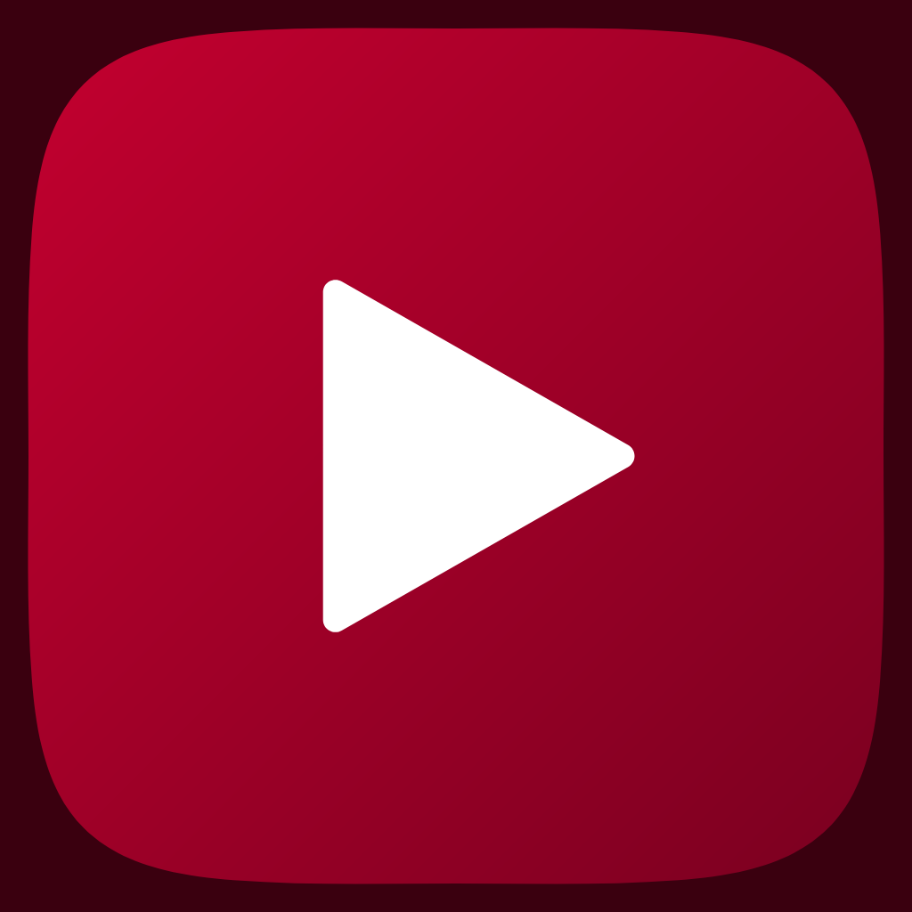
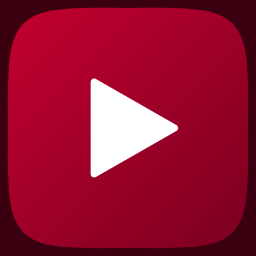
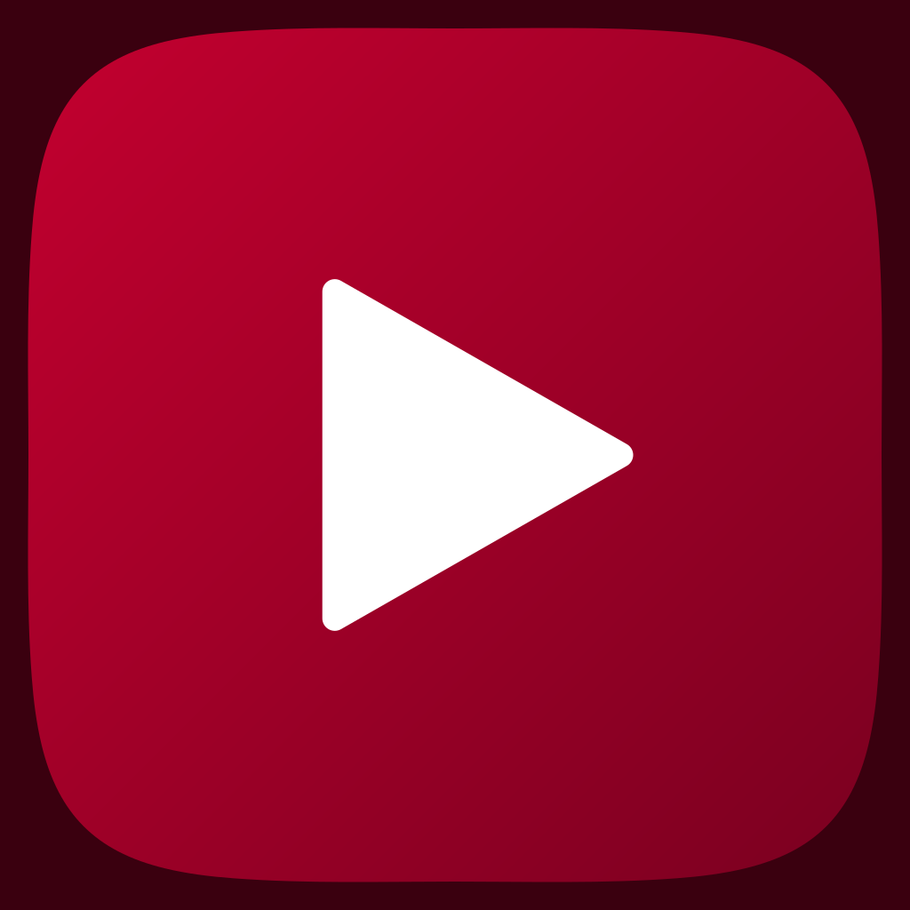
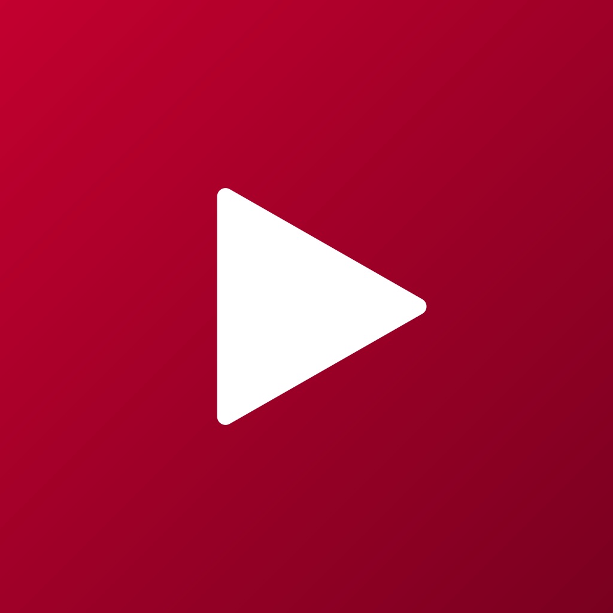

A. Squircle на подложке
Холст непрозрачный, углы залиты тёмным тоном того же красного. Форма «печенья» видна в любом лаунчере, даже если система ничего не скругляет.
Закрывает оба требования сразу: квадрат без прозрачности и squircle.

B. Градиент на весь квадрат
Годится, только если оболочка сама скругляет или обрезает плитку. В hbmenu и на домашнем экране иконка остаётся квадратом — формы squircle нет.
Треугольник тот же, читается так же.
N. Треугольник + стойка
Идея: play и правая стойка образуют «N» с контрформой. На деле знак читается как «следующее видео», а не как буква — и в 256, и в 64.
Условие ТЗ «только если читается в 64» не выполнено.
Охранное поле в макетах — 1/8 стороны иконки с каждой стороны. Внутри холста поле между squircle и краем — 32 px из 1024 (3,1 %): форма не касается края плитки.
Пока ничего нет
empty-feed.svg · Home
Найдите что посмотреть
empty-search.svg · Search
Ничего не найдено
not-found.svg · Search
Нет сети
offline.svg · ошибка сети
Пока ничего нет
empty-feed.svg · Home
Найдите что посмотреть
empty-search.svg · Search
Ничего не найдено
not-found.svg · Search
Нет сети
offline.svg · ошибка сети